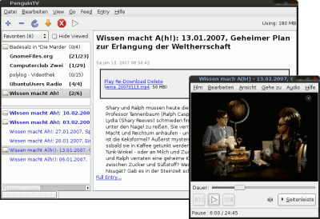
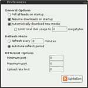

PenguinTV
Dieser Artikel wurde für die folgenden Ubuntu-Versionen getestet:
Ubuntu 16.04 Xenial Xerus
Zum Verständnis dieses Artikels sind folgende Seiten hilfreich:
PenguinTV  ist ein Feedreader mit besonderem Augenmerk, Online-Inhalte in Form von Podcasts und Weblogs in einer Anwendung zu verwalten. Die Podcasts und Weblogs werden per RSS-Feed abonniert, die mit PenguinTV verwaltet werden.
ist ein Feedreader mit besonderem Augenmerk, Online-Inhalte in Form von Podcasts und Weblogs in einer Anwendung zu verwalten. Die Podcasts und Weblogs werden per RSS-Feed abonniert, die mit PenguinTV verwaltet werden.
Das in Python verfasste Programm mit GTK+-Oberfläche ist auch dadurch sehr klein und stabil, weil es zum Abspielen von Audio- und Videodateien externe Anwendungen nutzt. Leider ist die Entwicklung zwischenzeitlich völlig eingestellt worden. Der Autor schreibt aber, das Programm solle weiterhin funktionieren, kleine bugs, die er selbst findet, würde er aber ggf. noch beheben.
Installation¶
Leider funktioniert die Version 4.2.x aus den Quellen unter Ubuntu 16.04 nicht, es werden keine Feeds gefunden (siehe diesen Thread im Forum). Abhilfe schafft das Erstellen der Version 4.5.1 aus dem Quellcode[1]. Dazu wird von der Gituhub-Seite der Code heruntergeladen und entpackt[2].
Diese Version benötigt das Paket[3]
python-gst1.0
 mit apturl
mit apturl
Paketliste zum Kopieren:
sudo apt-get install python-gst1.0
sudo aptitude install python-gst1.0
Ein ggf. installiertes Paket python-gst0.10 muss entfernt werden, da es ansonsten bei bestimmten Feeds zu Fehlern und Einfrieren der Programmoberfläche kommt.
Außerdem müssen ggf. in den Dateien setup.py sowie penguintv/IconManager.py die Vorkommen von import Image durch from PIL import Image ersetzt werden, z.B. durch die Befehle (im Terminal[2] auf der Ebene des entpackten Archivs)
sed -i "s/import Image/from PIL &/" setup.py sed -i "s/import Image/from PIL &/" penguintv/IconManager.py
oder in einem Editor[3].
Ein einfaches Paket kann dann mit dem Befehl
sudo checkinstall python setup.py install
erstellt und installiert werden.
Benutzung¶

Nach dem Starten[5] präsentiert sich das Programm in seinem schlichten Design. Es besteht aus dem Menü, einer kleinen Navigationsleiste und einer klassischen dreiteiligen Ansicht, die allerdings veränderbar ist.
Ein neues Abonnement fügt man über die Navigationsleiste (das Plus-Symbol) oder über "Feed -> Add Feed" hinzu. Im sich öffnenden Fenster wird nun unter "URL" die Feed-Adresse eingegeben bzw. hineinkopiert, unter "Tags" kann man beliebige Stichwörter zuweisen. Nach diesen Tags kann man die Feeds mittels Dropdown-Liste über der Feed-Liste filtern.
Weblogs¶
Für Weblogs, oder auch nur Blogs genannt, ist PenguinTV ein simpler Feed-Aggregator. Im Hauptfenster wird nur die Zusammenfassung angezeigt, der Link "Full Entry" öffnet den kompletten RSS-Beitrag im Standardbrowser. Dies ist standardmäßig der Firefox, dies kann man aber anpassen (mehr dazu unter Alternativen-System).
Audio- und Videoblogs¶
Wie bei einem normalen RSS-Feed wird die Zusammenfassung im Fenster angezeigt, ergänzend eine Infobox mit der Größenangabe der Mediendatei, Downloadstatus und weiteren Optionen zum Herunterladen und Abspielen. Wird "Open" oder "Download And Open" gewählt, wird die Audio- oder Videodatei im Standardplayer für das jeweilige Dateiformat geöffnet. Unter GNOME ist dies Totem; wie man dies ändern kann, wird im Artikel zu Nautilus erklärt. Wird bereits eine Datei abgespielt, wird die nächste in die Warteschlange aufgenommen und danach abgespielt.
Konfiguration¶

Das Programm selbst hat nur wenige Einstellungsmöglichkeiten, das gehört aber zum Prinzip von PenguinTV. Medien werden mit den Standardplayern des betreffenden Dateiformates abgespielt. Möchte man dies ändern, so muss man dies am System selbst vornehmen.
Im Einstellungsdialog unter "Bearbeiten -> Einstellungen" kann man einfache Einstellungen tätigen, wie Feeds bei Programmstart überprüfen und Dateien automatisch herunterladen.
Die Audio- und Videodateien werden in einem versteckten Ordner im Homeverzeichnis des Benutzers abgespeichert (~/.penguintv/media), was in den Einstellungen aber veränderbar ist.
Praktischerweise hat man oben rechts in der Navigationsleiste einen Überblick über den von den Pod- und Videocasts belegten Speicherplatz. Die Dateien können einzeln oder komplett per Menü unter "Feed -> Delete All Media" gelöscht werden.
 Übersichtsartikel
Übersichtsartikel- Erstellt mit Inyoka
-
 2004 – 2017 ubuntuusers.de • Einige Rechte vorbehalten
2004 – 2017 ubuntuusers.de • Einige Rechte vorbehalten
Lizenz • Kontakt • Datenschutz • Impressum • Serverstatus -
Serverhousing gespendet von